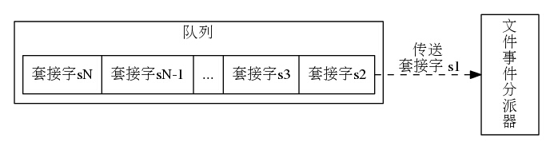
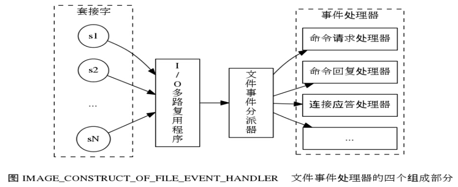
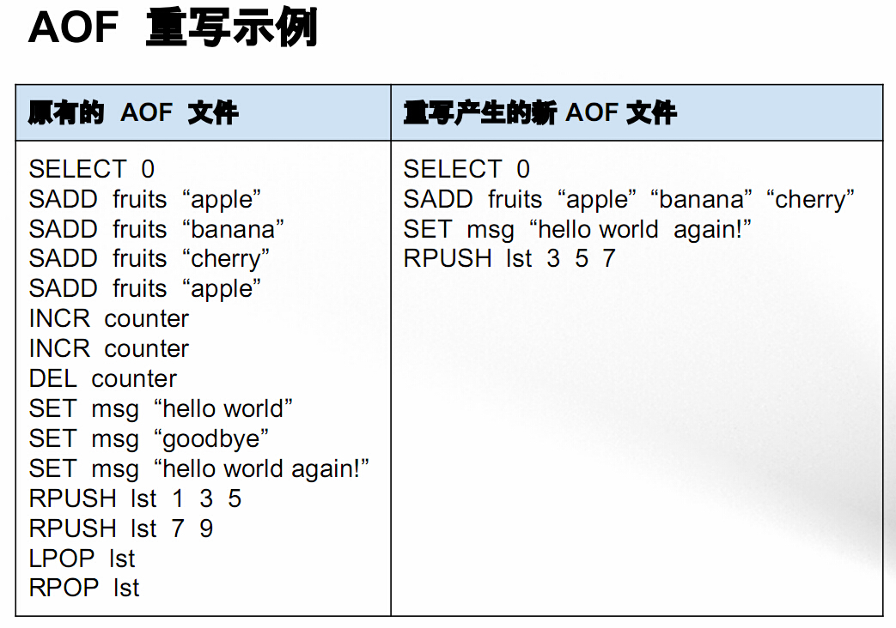
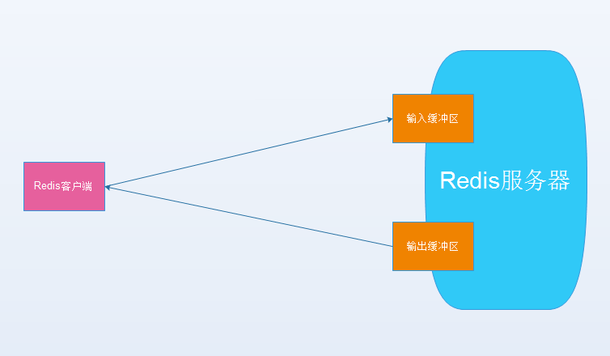
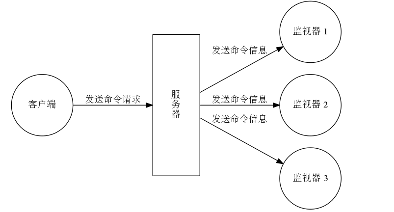
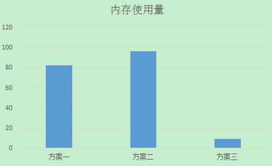

Redis 常见问题
为什么 Redis 这么快
总体来说快速的原因如下：
- 绝大部分请求是纯粹的内存操作（非常快速）
- 采用单线程,避免了不必要的上下文切换和竞争条件
- 非阻塞 IO
内部实现采用 epoll，采用了 epoll + 自己实现的简单的事件框架。epoll 中的读、写、关闭、连接都转化成了事件，然后利用epoll 的多路复用特性，绝不在 I/O 上浪费一点时间
redis 如何处理客户端连接
周期性出现 connect timeout
|
|
一开始怀疑是网络问题，但是并未发现问题，观察各种对比图表，tcp listenOverFlow 和 timeout 经常周期出现。
I/O 多路复用程序通过队列向文件事件分派器传送套接字的过程:

Redis 的单线程模型（对命令的处理和连接的处理都是在一个线程中），如果存在慢查询的话，会出现上面的这种情况，造成新的 accept 的连接进不了队列:

解决方法:
- 对慢查询进行报警（频率、数量、时间）等等因素
- 告诉业务端人员执行
monitor, keys *, flushall这些命令的坑
redis bgrewriteaof 问题
Redis 的 AOF 机制有点类似于 Mysql binlog，是 Redis 的提供的一种持久化方式（另一种是 RDB ），它会将所有的写命令按照一定频率(no, always, every seconds)写入到日志文件中，当 Redis 停机重启后恢复数据库。
AOF 重写:
- 随着 AOF 文件越来越大，里面会有大部分是重复命令或者可以合并的命令（100 次
incr=set key 100） - 重写的好处：减少 AOF 日志尺寸，减少内存占用，加快数据库恢复时间。

单机多实例可能存在 Swap 和 OOM 的隐患: 由于 Redis 的单线程模型，理论上每个 redis 实例只会用到一个 CPU, 也就是说可以在一台多核的服务器上部署多个实例（实际就是这么做的）。但是 Redis 的 AOF 重写是通过 fork 出一个 Redis 进程来实现的，所以有经验的 Redis 开发和运维人员会告诉你，在一台服务器上要预留一半的内存（防止出现 AOF 重写集中发生，出现 swap 和 OOM）。

解决方案:
- 让每个 redis 决定是否做 AOF 重写操作（根据
auto-aof-rewrite-percentage和auto-aof-rewrite-min-size两个参数） crontab: 定时任务，可能仍然会出现多个 redis 实例，属于一种折中方案- remote 集中式: 以机器为单位，轮询每个机器的实例，如果满足条件就运行(比如
currentSize和baseSize满足什么关系)bgrewriteaof命令。
Redis 内存占用飙升
执行命令 INFO 查看当前系统状态:
|
|
观察 info 信息，有一点引起了怀疑： client_longest_output_list 有些异常，于是理解想到服务端和客户端交互时，分别为每个客户端设置了输入缓冲区和输出缓冲区，这部分如果很大的话也会占用 Redis 服务器的内存。

从上面的 client_longest_output_list 看，应该是输出缓冲区占用内存较大，也就是有大量的数据从Redis服务器向某些客户端输出。于是使用 CLIENT LIST 命令（类似于 mysql processlist ）redis-cli -h host -p port client list | grep -v "omem=0"，来查询输出缓冲区不为 0 的客户端连接，于是查询到祸首 monitor，于是豁然开朗. monitor 的模型是这样的，它会将所有在 Redis 服务器执行的命令进行输出，通常来讲 Redis 服务器的 QPS 是很高的，也就是如果执行了 monitor 命令，Redis 服务器在 Monitor 这个客户端的输出缓冲区又会有大量“存货”，也就占用了大量 Redis 内存。

紧急处理和解决方法:
- 进行主从切换（主从内存使用量不一致），也就是
redis-cluster的fail-over操作，继续观察新的 Master 是否有异常，通过观察未出现异常。查找到真正的原因后，也就是 monitor，关闭掉 monitor命令的进程后，内存很快就降下来了。
Redis 内存使用优化
场景:
| userId(用户id) | weiboCount(微博数) |
|---|---|
| 1 | 2000 |
| 2 | 10 |
| 3 | 288 |
| … | … |
| 1000000 | 1000 |
(1) 使用字符串数据结构:
|
|
(2) 使用 Hash 结构:
|
|
(3) 使用 Hash 结构 + 多个 HashKey: key=userId/100, field=userId%100, fieldValue=weiboCount
|
|
内存占用量对比 (100万用户 userId:1~1000000) :

Redis 其实是一把瑞士军刀:
无穷无尽的 Replication 循环
(1) Slave 和 Master 如何同步数据:
- Slave: “我想要变成你”
- Master: “你必须要有耐心”
- Master forks 了他自己，然后
- fork 出来的进程开始 Dump RDB 文件
- 主进程继续处理常规 Redis 连接
- 任何对数据做出的改变都被拷贝到了 Replication 缓冲中
- Dump 完成了，Master: “过来拿吧”
- Slave 通过网络连接把文件取回来，然后放到自己的磁盘上
- Slave 放到本地之后，然后加载这个 RDB 文件
- Slave: “我已经完成了我的 circle，我准备好了”
- Master Replication 缓冲区的任何数据的改变将会自动同步到 Slave
由上述步骤可知，Slave 和 Master 之间的数据同步分为两个阶段: 全量和增量，当数据量很大的时候，会产生一种称之为 latency due to fork 的现象: The bigger your dataset is, the longer it will take to fork, dump, copy and load it into the slave.
Replication 缓存限制
对于 Redis 服务器的输出（也就是命令的返回值）来说，其大小通常是不可控制的。有可能一个简单的命令，能够产生体积庞大的返回数据。另外也有可能因为执行了太多命令，导致产生返回数据的速率超过了往客户端发送的速率，这是也会导致服务器堆积大量消息，从而导致输出缓冲区越来越大，占用过多内存，甚至导致系统崩溃。
所幸，Redis 设置了一些保护机制来避免这种情况的出现，不同类型的客户端有不同的限制参数。限制方式有如下两种：
- 大小限制，当某一个客户端的缓冲区超过某一个大小值时，直接关闭这个客户端的连接；
- 持续性限制，当某一个客户端的缓冲区持续一段时间占用过大空间时，会直接关闭客户端连接。
In a full master-slave synchronization, changes performed to the data during the initial phase of the synchronization are held in the replication buffer by the master server.
所有的 client 请求 redis 数据的时候，redis 要返回给 client 的数据都会先被存储在 output-buffer 中，等所有信息都被传送完毕之后，再清除 output-buffer 中的数据:
Redis 限制:
|
|
增加输出 Slave 的缓存大小:
|
|
Replication 超时
默认超时时间是 60 秒:
|
|
超时时间 = ( BGSAVE + COPY + LOAD ) * (110% ~ 120%)
(1) 执行 BGSAVE 命令，然后查看日志:
|
|
如果是从源代码安装的话，那么日志文件位于:
|
|
计量这两行经过了多少秒
|
|
(2) 统计拷贝 RDB 文件到 Slave 磁盘需要多久
(3) 统计加载 RDB 文件需要多久
|
|
最后多个 10% ~ 20% 的时间，来确保超时时间不出任何问题
客户端缓冲区
|
|
每一个客户端连接都被分配了自己的缓冲区，当处理完一个请求之后，Redis 就会将响应数据到客户端缓冲区中。查看客户端缓冲区 (0: 无限制) 的命令是:
|
|
客户端缓冲区的内存是从 Redis 可用的最大内存中分配的，KEYS, SMEMBERS, HGETALL, LRANGE, ZRANGE 这些个简单的命令可能会产生体积庞大的数据，很容易就会消耗掉巨大的内存，我们应该避免使用以上命令，取而代之的是应该首选 [SCAN](https://redis.io/commands/scan) 命令。